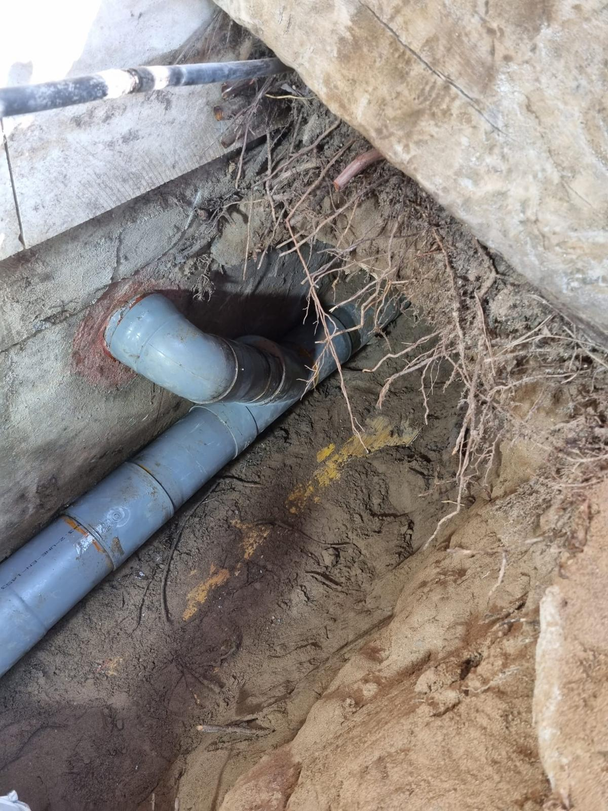
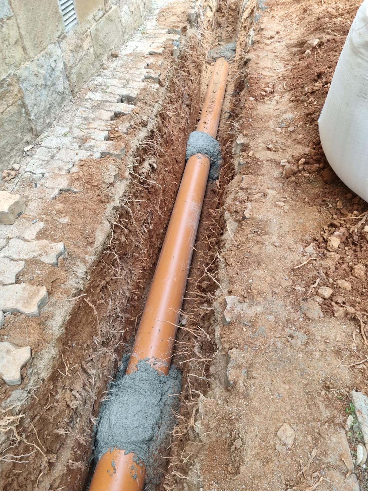
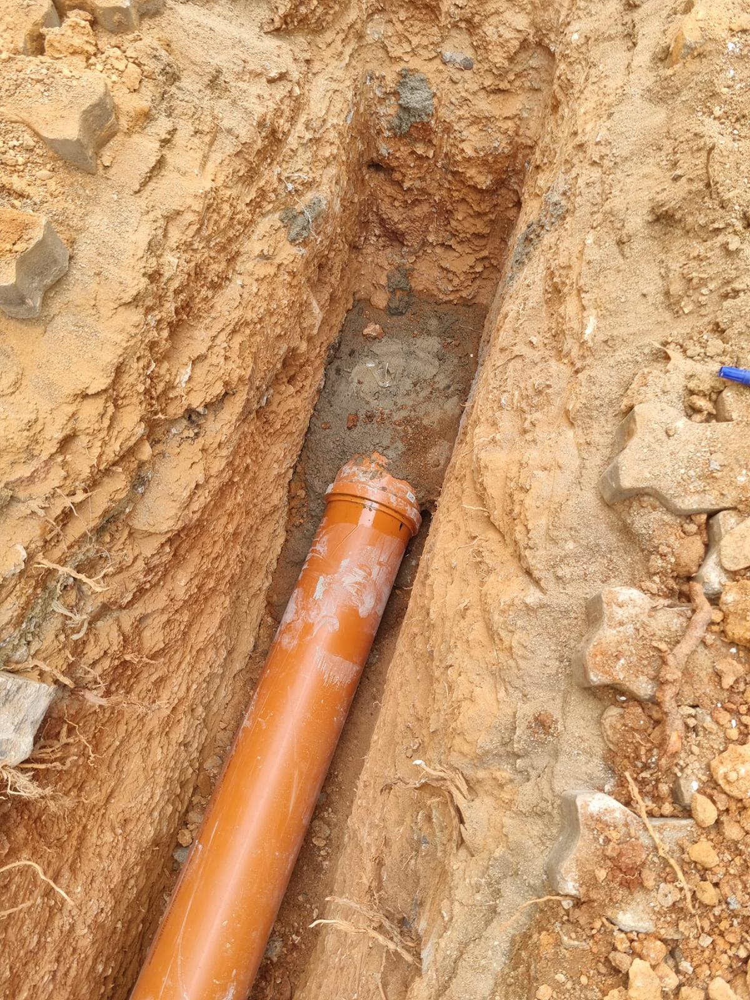
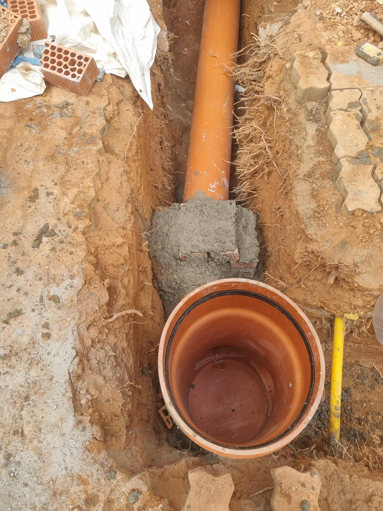
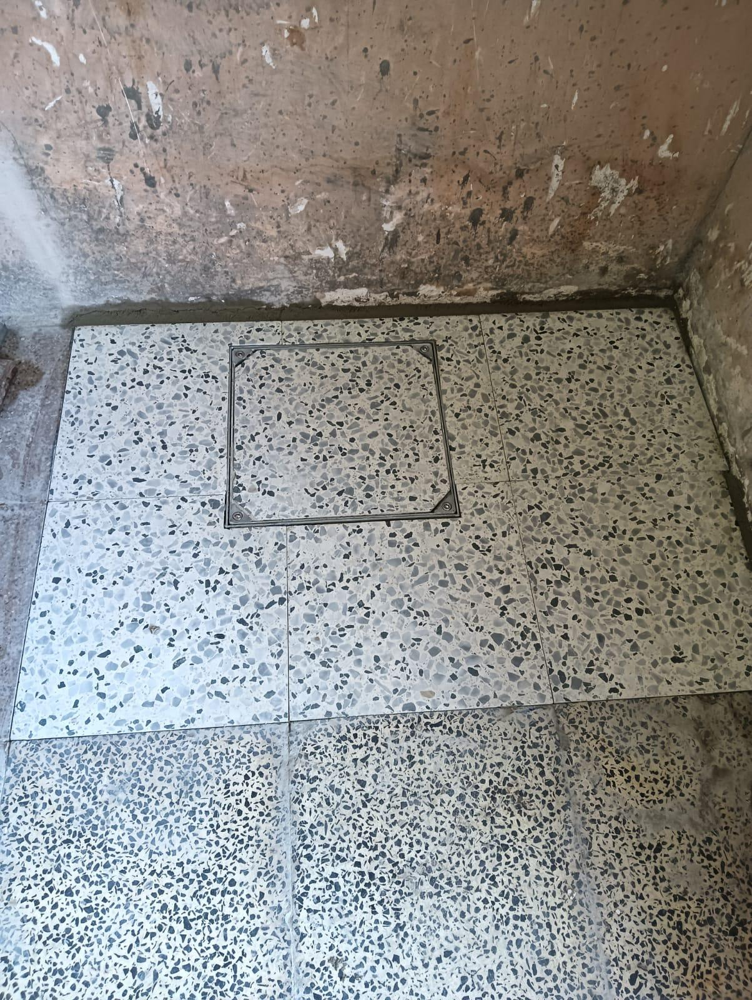
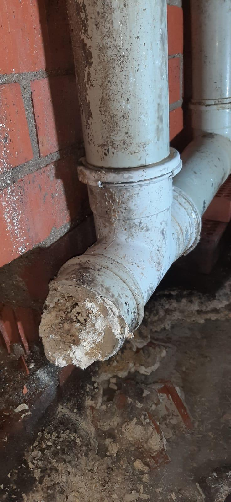
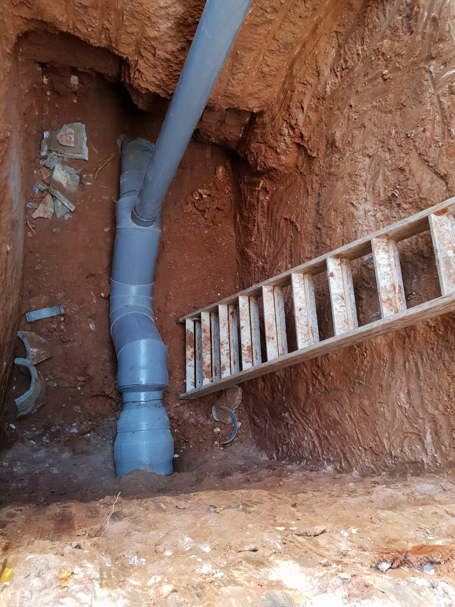
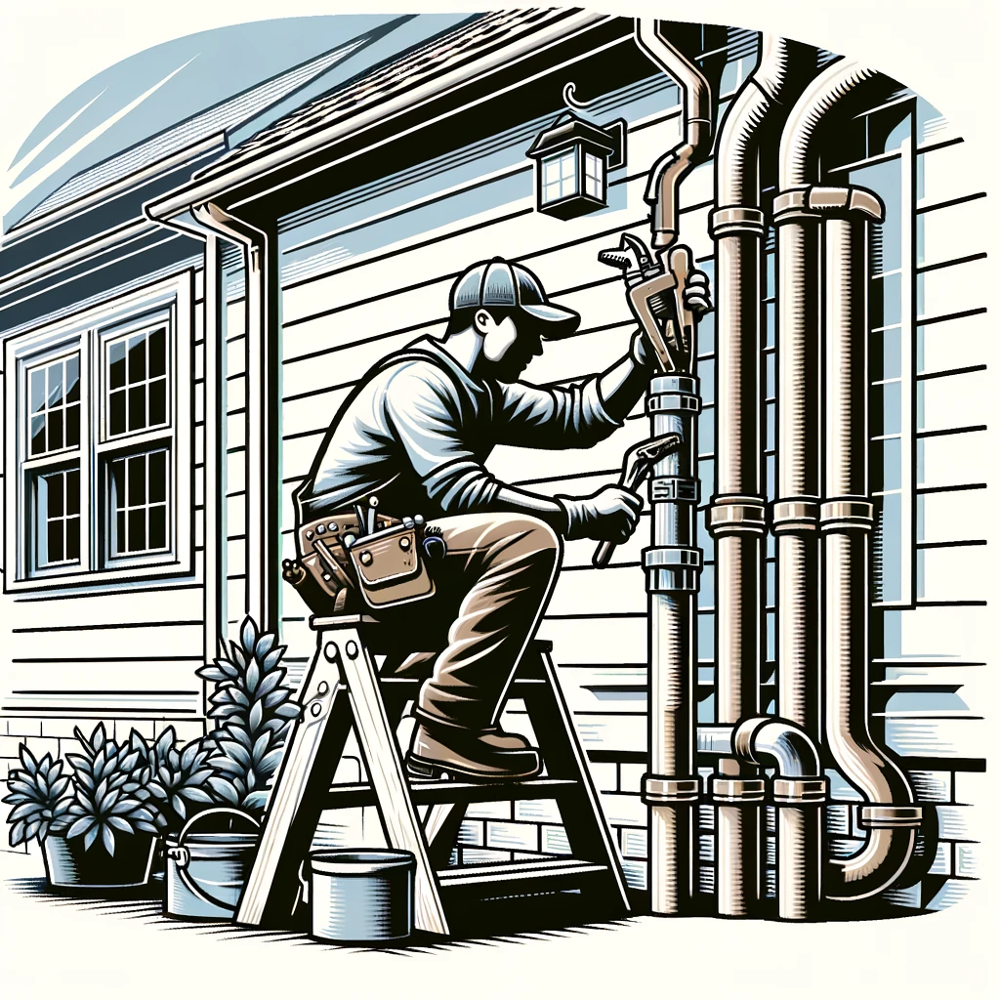

Construimos y reparamos albañales
desde hace más de 35 años
Especializados tanto en colgados como enterrados y saneamento (desagües) en general como ventilaciones.







Nuestros servicios
Construcción
De todo tipo de desagües a particulares, comunidades o empresas.
Reparación de redes existentes
En todo tipo de casuísticas: bajantes pluviales, colectores enterrados, desagües, ramales, anular arquetas, fosas sépticas, tuberos PVC y saneamiento general.
Soluciones en atascos
Solucionamos atascos o emboces en cualquier tipo de desagüe.
Albañales
Cambiar cualquier tipo de colector enterrado (albañal). Ya sea albañal tipo romano que hormigón o fibrocemento.
Anulación
De arquetas sifónicas por sifón de PVC con diámetros de 110, 125, 160, 200, 250, 315 y 400.
Bajantes
Cambiar bajantes fecales pluviales ya puedan ser de uralita en: obra nueva, comunidades, naves, casas, colegios, etc.
¿Cómo trabajamos?
Desde nuestros inicios hace más de 35 años tenemos un servicio profesional y de calidad para nuestros clientes. Ofrcemos nuestro servicio con recursos propios, utilizando tecnología avanzada y contando con personal cualificado.
